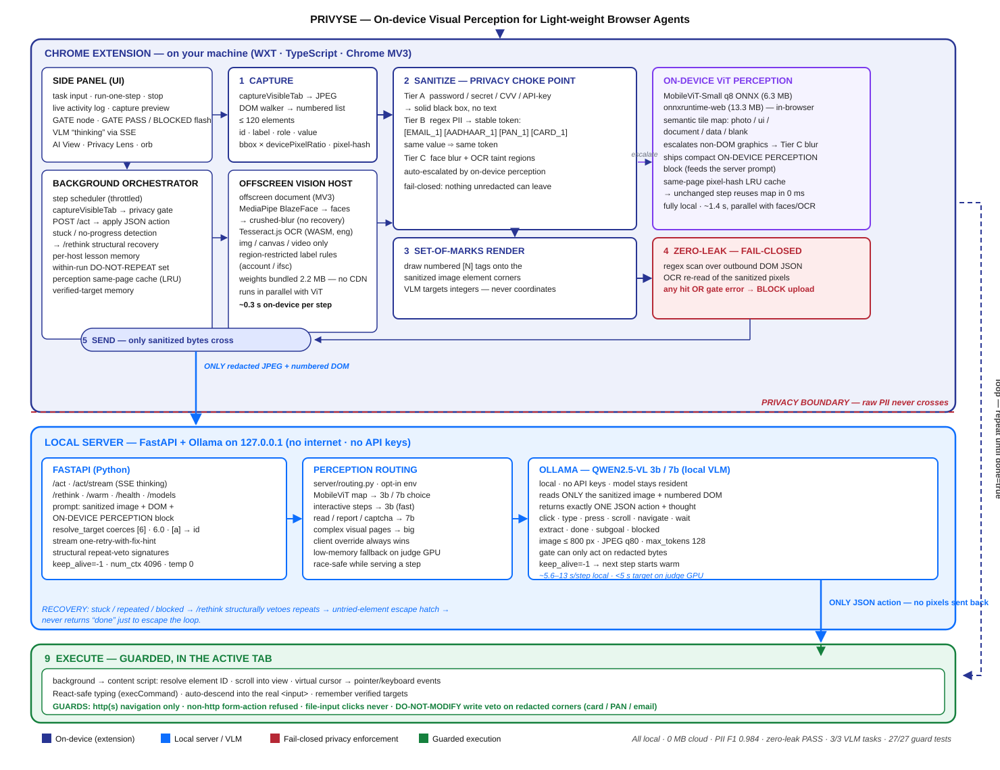

The pitch for browser agents is seductive: give a vision-language model access to your tabs, and it can fill forms, file reports, and navigate tools you never wrote an integration for. The implementation detail that pitch skips is brutal — to see the page, the model sees everything on the page. Your email. Your PAN. The card number half-typed into a KYC form. Your face in a video call thumbnail.
PRIVYSE — built for SIH track 26171, On-device Visual Perception for Lightweight Browser Agents — starts from a different question: how do we let the model control the browser without giving it the user's private screen? The answer is not a privacy policy bolted onto a normal agent. It is an inverted pipeline where privacy is the architecture.
The problem: agents that trust the model with the screen
A conventional computer-use agent does one thing every step: capture the viewport, ship the pixels, ask the model what to do. That single habit can expose emails, phone numbers, government IDs, passwords, OTPs, API keys, faces, and sensitive documents — all in one JPEG. Prompting the model to "ignore" the PII does nothing; the data has already left the device.
Sanitizing after the model has seen the screen is not sanitization. The only place privacy can be enforced is before the privacy boundary — between the browser and the model.
Constraints that shaped the design
- The boundary must be demonstrable. Not "we promise not to log it" — a gate a user can watch, failing closed, on every step.
- The DOM is not enough. Modern pages hide values in
<canvas>, SVG, images, video, and tiny rendered text. A DOM-only sanitizer has holes you cannot see. - Redaction cannot destroy context. If every email becomes a black box, the model cannot complete tasks that need to reference it. The rewrite has to preserve referential structure.
- The agent must stay useful. A gate that blocks every image-heavy page forever is a denial-of-service, not a privacy system — degradation has to be explicit, not silent.
Architecture: capture → sanitize → gate → reason → act
Every agent step runs the same visible pipeline. The most important component in it is not the model — it is the gate.

- Capture —
captureVisibleTabgrabs the viewport; a DOM walker serializes interactive elements (id, label, role, value, bbox) capped at 120 elements, and hashes pixels for the perception cache. - Perceive — MobileViT-Small (quantized ONNX, 6.3 MB), BlazeFace, and region-restricted Tesseract.js OCR run locally, in parallel.
- Sanitize — three tiers of redaction (below), then Set-of-Marks paints numbered
[N]tags so the model targets integers, never coordinates. - Gate — two independent checks, detailed in the next section. Any hit blocks the step.
- Reason — only the redacted JPEG plus numbered DOM reach the local FastAPI server, which routes to a Qwen2.5-VL 3B or 7B and gets exactly one JSON action back.
- Act — a guarded executor resolves element ids and drives pointer/keyboard events through scheme allow-lists and a DO-NOT-MODIFY veto.
Three tiers of redaction — and why tokens beat black boxes
Not all sensitive data deserves the same protection. PRIVYSE classifies into three tiers:
| Tier | Information | Protection |
|---|---|---|
| Tier A | Passwords, OTPs, CVVs, API keys | Solid black box — no text, no token |
| Tier B | Email, phone, PAN, Aadhaar, cards, names | Stable privacy token |
| Tier C | Faces, canvas, video, non-DOM graphics | Blur / region taint |
Tier B is the interesting one. Destroying a value with a black box removes context the model needs; leaving it is a leak. The compromise is stable tokenization — the same raw value always maps to the same token for the run, so the model keeps continuity without ever seeing the secret:
john@example.com 4111 1111 1111 1111 9876543210@ybl
↓ ↓ ↓
[EMAIL_1] [CARD_1] [UPI_1]Cross-source continuity is deliberate: a value discovered by OCR in an image receives the same token when it later appears in the DOM. Indian identifiers — UPI IDs, voter ID, driving licence, passport, PAN, Aadhaar, IFSC — have dedicated detection patterns, measured at 100% precision/recall on the GT benchmark pages.
Tokens must be stable across the whole run, not per-screenshot. Per-frame tokens would make the model re-learn the mapping every step and break any task that references a value found earlier. Global stability is also what lets the gate recognize a token as already-sanitized rather than as a leak.
The zero-leak gate: two checks, one fail-closed rule
Before anything crosses the boundary, the outbound payload is verified twice:
- DOM verification — a pure regex scan (
assertNoLeaks) over the outbound DOM JSON. Always runs. Cannot be skipped. - Pixel verification — the actual sanitized screenshot bytes are OCR-scanned again. This is the check that catches PII the DOM never carried.
The two layers do not fail identically. A DOM-layer failure can never send. A pixel-layer check that runs and finds PII can never send. But if the on-device vision host is down, PII that exists only in pixels is not OCR-verified on that step. Blocking every image-heavy page indefinitely would make the agent unusable, so the degradation is deliberate — the side panel reports gate: skip — and all nine failure paths are walked in docs/perception-failure-path-audit.md. It is a real, narrow gap, not a claim of airtightness.

Perception-driven model routing
On-device perception pays a second dividend: the MobileViT tile map tells the server how much reasoning the step needs before the model is called. Interactive steps (form fill, navigation, typing) route to the 3B; read/report/captcha steps route to the 7B. Measured on the routing benchmark:
| Routing config | Visual-context tasks | Steps |
|---|---|---|
| qwen2.5vl:3b only | 2 / 3 | 4.7 |
| qwen2.5vl:7b only | 3 / 3 | 1.3 |
| Routed 3B / 7B | 2 / 3 | 5.0 |
The routed read/report failure is documented as a property of the harder prose-heavy test page, not of the routing logic — interactive accuracy is 3/3 either way. The small model is never trusted blindly: streamed actions are validated, coerced, and guarded before execution.
Experiments: what the benchmarks actually say
All numbers come from the repo's own suite (benchmarks/results/dashboard.json plus the suite runners), against ground-truth-labeled pages:
| Metric | Result |
|---|---|
| PII detection F1 (pixels) | 0.984 |
| Precision / Recall | 0.968 / 1.000 |
| Zero-leak | PASS |
| Adversarial privacy suite | 30 / 30 blocked |
| Executor guard tests | 27 / 27 passed |
| Live /act spot-check (forged hostile responses) | 10 / 10 refused |
| Raw data off-device | 0 MB |
| Routed end-to-end latency | ≈ 12.7–13 s / step |
The adversarial suite is the number I trust most, because it is the least flattering: canvas PII, SVG PII, tiny text, obfuscated values, visual and text prompt injection, exfiltration via data:/blob:/javascript: form actions, forged /act responses, and protected-field overwrite attempts. Thirty attempts, thirty blocks. The executor's DO-NOT-MODIFY veto is deterministic, which means it defends against a hostile server response, not just an honest model making a mistake.
The zero-leak OCR gate is occasionally nondeterministic — roughly 1 failure in 4 full runs, a blur-sample variance on one image page. The critical property: it has never failed open. When OCR cannot confirm, the step is blocked. A flaky gate that fails closed is a latency problem; a reliable gate that fails open is a privacy incident.
Limitations: the two defects we document instead of bury
Our own audit of the human-in-the-loop path found two high-severity defects, now tracked publicly in the README:
- D2 (open, queued first) —
history[].resultand the user'staskstring are attached to the outbound body untokenized, and the DOM gate only walksbody.dom[].text/value. PII typed into a human-in-the-loop answer could leave in plaintext with the gate blind to it. Until D2 is closed, the honest statement of the boundary is: DOM-sourced PII is provably blocked; PII introduced through the agent's own conversation with the user is not yet covered. - D1 (open) — the risky-action confirm detects Cancel via
startsWith("cancel"), so typing "no" executes the action. It needs an explicit allow-list.
Listing these is not humility theater. A privacy claim a reader cannot check is marketing; a privacy claim with a public defect table is engineering.
Build the audit harness before the feature that needs auditing. D2 was found by walking the human-in-the-loop paths with a test matrix, not by staring at the sanitizer. The same discipline that produced 30/30 on the adversarial suite produced the defect table — it is one muscle.
Reproducibility
Everything above is reproducible from the public repo. The short version:
cd server
.venv\Scripts\activate
pip install -r requirements.txt
uvicorn app:app --reload # http://127.0.0.1:8000/health
# optional perception routing
$env:PERCEPTION_ROUTING = "1"
$env:VLM_MODEL_SMALL = "qwen2.5vl:3b"
$env:VLM_MODEL_BIG = "qwen2.5vl:7b"
cd ../benchmarks
npm run build
node run.mjs # sanitizer P/R + zero-leak + latency
node aggregate.mjs # merge into results/dashboard.jsonThe latency budget model, the perception failure-path audit, and the HITL test matrix live in docs/. If a number in this article disagrees with the repo, the repo wins.
Takeaways
- Privacy in an agent system is an ordering constraint, not a feature. Sanitize before the model is allowed to look.
- A gate users can watch — flash PASS/BLOCKED every step — changes what "trust" means. Trust becomes verification.
- On-device perception is not just a privacy cost center; the same inference that protects the screen also routes the model and caches the page.
- Publish your defects. The defect table is the most credible paragraph on the repo.
References
- PRIVYSE repository — github.com/The-Infernix/PRIVYSE (benchmarks, docs, defect table)
- SIH 26171 track brief — On-device Visual Perception for Lightweight Browser Agents
docs/perception-failure-path-audit.md— all nine gate failure pathsdocs/hitl-test-matrix.md— the audit that found D1 and D2docs/latency-budget-judge-gpu.md— the p50 < 5 s/step target model